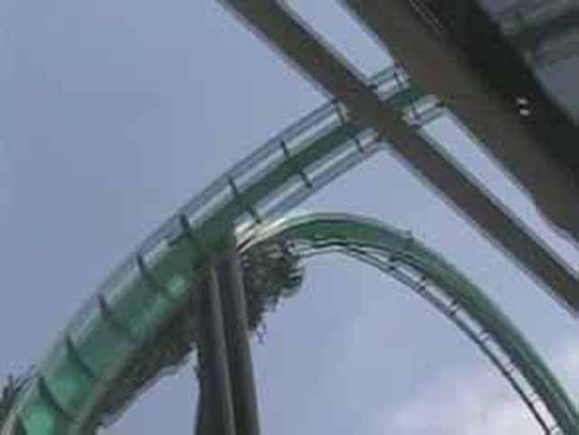
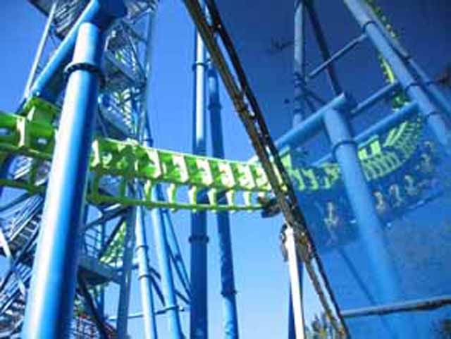
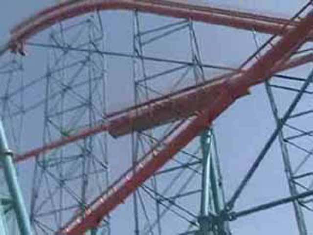

Fall 2005 Photos
Disneyland Resort Knotts Berry Farm Six Flags Magic Mountain
 This what Magic Mtn looks like before Fright Fest!
This what Magic Mtn looks like before Fright Fest!
 Viper was actually running SMOOTH today!
Viper was actually running SMOOTH today!

Rapid River Crossing was closed, so we went all the way around the park to see that Riddlers had a 30 min wait and so we rode.
 Gold Rusher was running very smoothly today.
Gold Rusher was running very smoothly today.

DejaVu was open, the line was 15 min, so we rode. I love Vekomas!
HA! HA! CELESTE!
 Superman, one of the fastest coasters in world and yet, I only give it a C! It uses LSMs and yet, even California Trimming has a better launch!
Superman, one of the fastest coasters in world and yet, I only give it a C! It uses LSMs and yet, even California Trimming has a better launch!
Grinders Gearworks was running well also!
 Unlike the other rides, Batman had a long line, but the ride was also running well!
Unlike the other rides, Batman had a long line, but the ride was also running well!

Goliath didn't have too long of a line, so we rode! It was also running well with plenty of Positive Gs!
 Frigh Fest began. The park became packed so we just left. We had a good day at Six Flags, We got on everything multiple times at Knotts and got on alot at Disneyland because it wasn't so crowded. This was a great update!
Frigh Fest began. The park became packed so we just left. We had a good day at Six Flags, We got on everything multiple times at Knotts and got on alot at Disneyland because it wasn't so crowded. This was a great update!
Home